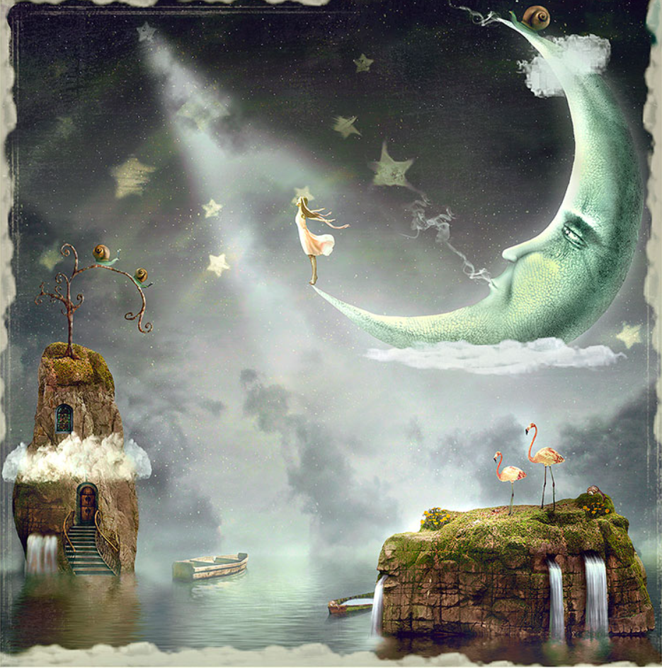

Казки для дітей
Казка – це народний або літературний твір про вигадані, часто фантастичні події.
З дитячої казки починається його знайомство зі світом літератури, з миром людських взаємин і з навколишнім світом в цілому. Казка є таким же необхідним етапом розвитку дитини, як і гра.

Перша казка: Шарль Перро "Червона Шапочка"
Друга казка: Сергій Козлов "Зелений птах"
Третя казка: Дональд Біссет "Дракон Комодо"
Четверта казка: Ольга Зубер "Подарунок янгола"
П'ята казка: Грецька казка "Русалка"
Червона шапочка
Давно колись жила в одному селі маленька дівчинка, та така красуня, що кращої за неї, мабуть, ніхто й ніде не бачив. Мати любила її до нестями, а бабуся ще більше.
Добра бабуся пошила для внучки гарненьку червону шапочку, яка була їй так до лиця, що дівчинку всі почали звати — Червона Шапочка.
Якось мати спекла пиріг та й каже дочці:
— Піди до бабусі, довідайся, як вона поживає, бо мені передавали, що вона нездужає. Віднеси їй пиріг і цей горщечок масла.
Червона Шапочка хутенько зібралась і подалась у сусіднє село до бабусі.
Йде вона неквапно густим лісом, коли раптом назустріч їй сірий вовк.
Йому страшенно захотілося з’їсти дівчинку, але він не наважився це зробити, бо бачив, що поблизу працювали лісоруби.
От вовк і питає, куди вона йде.
Бідолашна дівчинка не знала, як небезпечно зупинятися в лісі і слухати теревені вовка, а тому, не думаючи ні про що погане, відповіла:
— Я йду навідати бабусю й несу їй пиріг та горщечок масла, які передала матуся.
— А чи далеко живе бабуся? — питає вовк.
— Авжеж, дуже далеко,— відповідає Червона Шапочка,— он за тим вітряком, бачите, в хатинці край села.
— Гаразд,— каже вовк,— я теж до неї навідаюсь. Я подамся ось цією стежкою, а ти прямуй он тією. Побачимо, хто з нас швидше прийде до бабусі.
І вовк щосили побіг найкоротшою стежкою.
А дівчинка пішла по шляху, який був набагато довший, та ще й дорогою збирала горіхи, ганялася за метеликами і рвала для бабусі квіти

Не пройшла вона й півдороги, а вовк уже добіг до бабусиної хатинки й постукав у двері:
«Тук-тук».
— Хто там? — спитала бабуся.
— Це ваша внучка, Червона Шапочка,— відповів вовк, змінивши свій грубий голос.— Я принесла вам пиріг і горщечок масла. Це вам матуся передала.
Добра бабуся саме лежала в ліжку, бо й справді трохи нездужала.
По голосу вона прийняла вовка за Червону Шапочку, а тому й гукнула з кімнати:
— Смикни за мотузочку, клямка й відчиниться.
Вовк смикнув за мотузочку, і двері відчинилися.
Тут він накинувся на бабусю і одразу зжер її.
Потім вовк зачинив двері, ліг замість бабусі в ліжко й почав чекати Червону Шапочку.
Незабаром дівчинка прийшла і постукала:
«Тук-тук».
— Хто там? — спитав вовк.
Червона Шапочка спочатку дуже перелякалась, почувши такий грубий голос, та потім подумала, що то, мабуть, у хворої бабусі нежить, і відповіла:
— Це ваша внучка, Червона Шапочка. Я принесла вам пиріг і горщечок масла. Це вам матуся передала.
Вовк гукнув трохи ніжнішим голосом
— Смикни за мотузочку, клямка й відчиниться!
Червона Шапочка смикнула за мотузку, і двері справді відчинилися.
Побачивши, що дівчинка ввійшла до хатинки, вовк по самі вуха сховався під ковдру та й каже:
— Поклади-но пиріг на скриню і горщечок туди ж постав, а сама йди полеж зі мною, відпочинь з дороги.
Червона Шапочка послухалась і лягла в ліжко.
Та як же вона здивувалась, коли побачила, що за страхітливий вигляд має її бабуся!
От вона й каже:
— Бабусю, а які ж у вас руки великі!
— Це, щоб міцніше тебе обнімати, внученько!
— Бабусю, а які ж у вас ноги великі!
— Це щоб краще бігати, дитинко!
— Бабусю, а які ж у вас вуха великі!
— Це щоб краще чути тебе, дівчинко!
— Бабусю, а які ж у вас очі великі!
— Це щоб краще бачити тебе, внученько!
— Бабусю, а які ж у вас зуби великі!
— А це щоб тебе з’їсти!
З цими словами злий вовк накинувся на Червону Шапочку й миттю з’їв її.
А тут саме поверталися з села лісоруби й надумали завітати до бабусі у гості.
Увійшли до хатинки — бабусі нема, а замість неї лежить у ліжку під ковдрою сірий вовк.
— Так ось де ми тебе впіймали, лихоманцю! — вигукнув один з лісорубів.
Змахнув він своєю сокирою і тільки-но хотів убити вовка, аж раптом чує — гукають з вовчого черева старенька бабуся й маленька Червона Шапочка:
— Люди добрі, звільніть нас!
Узяв другий лісоруб ножиці й розрізав вовкові черево, а звідти вилізли бабуся й Червона Шапочка, живі та здорові.
— Як же я перелякалась! — сказала Червона Шапочка.— Як тісно й темно було в череві у вовка! Дякую вам, дядечку лісоруб, за те, що ви врятували нас.
А бабуся теж подякувала лісорубам і почастувала їх пирогом та маслом, що принесла їй Червона Шапочка в подарунок.
Зелений птах
Старий Крокодил довго спав на березі річки, засунувши пащу в пісок і зануривши хвіст у воду.
Йому снилося, ніби він не Крокодил, а великий зелений птах, що летить над усією Африкою.
Унизу гуляють жирафи, бігають леви, а він летить і махає своїм зеленим хвостом, і хвіст у нього такий легкий і прохолодний, якого немає в жодного птаха…
«У мене дуже широкі крила, – думає уві сні Крокодил, – я можу летіти довго-довго і не втомлюватися».
– У кого є такі широкі крила? – запитав він.
І ніхто йому не відповів, тому що ні в кого не було таких широких крил.
– Хто може так довго літати? – запитав він.
І знову не було відповіді, тому що хто ж зможе так довго літати, як Крокодил – Зелений птах…
«Добре літати, – думає Крокодил, – добре піднятися високо-високо, щоб було видно все навкруги і щоб тебе всі бачили».
– Ти мене бачиш, Жирафе? – запитав він.
– Бачу, – відповів Жираф.
– Ти мене бачиш, Леве?
– Так, – сказав Лев. – А хто ж тебе не бачить?
– А хто я? – запитав Крокодил.
– Ти – великий Зелений Птах, – відповів Жираф, – з широкими крилами…

Вже й Африка лишилася позаду. Тепер він летів над морем. Унизу здіймалися хвилі, і Кит гойдався на найбільшій хвилі.
«Він уміє пірнати глибше за мене, – подумав Крокодил, – але він не вміє літати!»
– Ти вмієш літати, Ките? – запитав він. – Ти знаєш, хто я?
– Ні, я не вмію літати, Зелений Пташе, – відповів Кит. – Але ти можеш сісти на мою спину та відпочити.
І Крокодил опустився на Китову спину.
«Ось він який! – думає Крокодил, гладячи шорстку Китову шкіру. – Ось він який, Головний Морський Крокодил!..»
І Крокодилові раптом так захотілося хоч на хвилину стати Китом, що він сказав:
– Ките, давай я стану тобою, а ти – Зеленим Птахом!
– Ні, – подумавши, відповів Кит. – З цього нічого не вийде: з мене вийде занадто великий птах.
– Але, може, спробуємо?
– Навіщо? – здивувався Кит. – Навіщо мені бути птахом, якщо я люблю море?
І тут Крокодил прокинувся.
Африканське сонце сліпить йому очі, брати-крокодили, наче колоди, плавають у річці, і так йому остогидло на все це дивитися…
Що він знову засинає і стає Зеленим Птахом, який летить над усім світом.
Дракон Комодо
Жив колись на світі дракон. Звали його Комодо.
Він умів вивергати вогонь, і тому всі навколишні жителі його боялися. Почувши його кроки, усі розбігалися і ховалися.
А кроки його було важко не почути, адже Комодо носив одразу три пари черевиків – адже у драконів шість ніг! – і всі шість черевиків разом, та ще кожен черевик окремо, жахливо скрипіли.
Але якось одного разу Комодо зустрів дівчинку Сьюзі, яка його анітрохи не злякалася.
– Навіщо ти вивергаєш вогонь? – запитала вона. – Ти ж лякаєш!
– Ну, – відповів дракон, – я... гм... я не знаю. Якось не думав про це. А що, більше не треба лякати?
– Звичайно, не треба, – сказала Сьюзі.
– Гаразд, не буду, – пообіцяв Комодо.

Вони попрощалися, і Сьюзі пішла додому. Уже стемніло, але ліхтарник Чарлі чомусь не запалював вогнів, і перехожі не знали до пуття, куди їм іти.
Виявляється, Чарлі навіть не вставав у цей день з ліжка. Він перевтомився напередодні ввечері і не встиг ще як слід відпочити. Він міцно спав і жував уві сні бутерброд.
А мер міста, сер Вільям, дуже сердився. Він не знав, як запалити вуличні ліхтарі.
І тут Сьюзі сяйнула гарна ідея. Вона побігла назад, до печери Комодо, і привела дракона в місто. Вони удвох обійшли всі вулиці; дракон вивергав вогонь і запалював усі ліхтарі поспіль.
Жителі міста дуже зраділи. З того часу вони зовсім перестали боятися дракона.
І кожен рік, коли ліхтарник Чарлі їхав у відпустку, вони звали Комодо запалювати на вулицях міста ліхтарі.
Подарунок Янгола
Одного разу, на осяяну ранковим промінням Землю, спустився маленький Янгол. Він зістрибнув із золотавої хмаринки і потупцяв босими ніжками по росяній траві.
Він роздивлявся все довкола: квіти, що прокидалися від сну, озера, гори, річки, заглядав у гнізда пташок, милувався метеликами, та маленькими крапельками роси, що перлинками переливалися на траві.
Він ішов усе далі й далі. І вийшов до невеликого, але дуже красивого озера. Вода в озері була наче прозоре блакитне скло, і лиш тендітні хвильки дріботіли на поверхні.
Янголятко нахилилося до води і посміхнулося до свого відображення, а потім, обережно, щоб не замочити крилець, помило у водичці свої крихітні ніжки.
Аж, раптом, на середину озера випливла зграя величних лебедів.
У Янголятка аж подих перехопило від такої краси! Лебеді пливли плавно, гордо вигинаючи шиї та скоса позираючи на своє відображення у воді, милуючись собою. Янголятко, склавши рученята, захоплювалось диво-птахами.

Зненацька, на озеро налетів шалений вітер. Озеро пінилося хвилями, шуміли дерева, ламалися гілки, з гір котилось каміння. Лебеді билися мокрими крильми об хвилі і не могли злетіти. Маленьке Янголятко злякалося і міцно схопилося рученятами за стовбур дерева. Небо затяглося важкими хмарами і почалася злива.
На щастя, дощ ішов недовго. Вітер ущух, і на Землю знов полилося тепле сонячне світло.
Янголятко присіло, щоб перевести подих, і побачило, що біля нього лежить красень-лебідь.
– Що з тобою? – стривожилось Янголятко.
Але лебідь був такий знесилений, що не зміг відповісти. І лише придивившись до нього, Янголятко побачило, що в птаха поранені крила.
– Я не зможу тепер летіти, – нарешті відповів лебідь.
– Як же так?! – захвилювалося Янголятко.
– Нам пора летіти у далеку подорож. А мої крила не дадуть мені змоги це зробити.
– Візьми мої крила! – не довго думаючи сказало Янголятко.
– А як же ти? Ти теж без крил не зможеш літати!
– А я залишуся тут, на Землі, – відповіло Янголятко.
Лебідь взяв, незвичні для себе крила, подякував, низько прихиливши голову до землі, й стрімко піднявся у височінь. Янголятко проводжало його поглядом, не зводячи очей, аж поки лебідь, пролетівши крізь білу хмарину, не зник у далині.

Аж, раптом, Янголятко побачило, як на Землю спустилося безліч Янголів. Вони подарували пораненим лебедям свої крила, щоб ті змогли полетіти у вирій.
Лебеді вдячно глянули на своїх рятівників, залопотіли крилами й швидко, один за одним покинули озеро.
А Янголи, що подарували свої крила птахам, перетворились на діточок, і залишились жити на Землі. І ти також Янголятко. Просто колись давно ти подарував свої крила пораненому лебедю.
Русалка
На березі моря жив рибалка із дружиною. Бідний собі чоловік, невдаха. Скільки він не рибалив – все даремно. Так і бідували день при дні.
Якось уранці вийшов рибалка на човні в море. Закинув сіті раз, витяг – жодної рибинки. Закинув удруге – знову нічого. Сів рибалка та й заплакав гірко:
– Якщо так і далі буде, помремо ми з голоду!
Зненацька крута хвиля викинула на його човен прекрасну русалку.
– Чого ти плачеш, чоловіче? – спитала русалка. – Яке лихо тебе спіткало?
– Як же мені не плакати, русалко! Ось уже не один місяць виходжу я рибалити, і хоч би щось тобі попалося.
– А віддаси мені свого сина, коли йому сповниться двадцять років? – спитала русалка.
– В мене немає дітей.

– Скажи, що віддаси,– і ти щодня витягатимеш рибу із моря.
– Добре,– подумавши, мовив рибалка, – хіба жалко того, чого не маєш? Віддам тобі сина, коли йому сповниться двадцять років.
Русaлка подякувала і зникла у хвилях.
Знову закинув рибалка сіті, а назад уже ледве їх витяг – тільки було риби! Він одніс рибу на базар у місто і на вторговані гроші купив харчів, одягу, взуття, сітей, вудок. Дружина дивом дивувалася й дуже раділа.
Другого дня повторилося те саме. Ввечері рибалка повернувся з повного торбою золота. І так щодня.
Рибалка найняв майстрів, які збудували йому новий день, найняв служницю, купив великий човен з вітрилом. Скоро він уже виходив у море, і в його сіті попадало стільки риби, що рибалка навіть з помічником ледве її витягав.
Він швидко розбагатів.
Минув рік, і в рибалки народився хлопчик, маленький, повненький. Назвали його Ставраїтос. Жінка нетямилась від щастя, а чоловік засмутився.
– Що з тобою, чоловіче? – спитала жінка. – Чому ти такий невеселий?
Але рибалка не мовив ані слова – нащо і їй тужити?
Ставраїтос виріс і став гарним та розумним парубком. Всім він приносив радість.
Раз уранці він каже батькові:
– Батьку, можна я піду у гори на полювання?
Йди, сину!
Ставраїтос повісив рушницю через плече, взяв із собою собаку й пішов у гори. Але хоч би тобі де пташка пролетіла... Раптом бачить – орел сів на сосну.
– Ану ж бо прицілюся,– мовив парубок і вмить зняв з плеча рушницю.
Побачив орел, що парубок цілиться в нього, і крикнув:
– Не вбивай мене, парубче, в мене маленькі діти! Пожалій їх, благаю!
Опустив Ставраїтос рушницю:
– Гаразд, не буду тебе вбивати.
– За твою милість і я заплачу тобі добром. Візьми це перо і завжди май при собі. Коли захочеш мене бачити, дістань його – і я вмить опинюся біля тебе.
Ставраїтос сховав перо і пішов собі далі. Ішов та йшов – аж коли чує страшне ревіння. Неподалік лежав лев із зламаними передніми лапами.
– Я стрибнув ось із цієї скелі і зламав собі ноги. Добий мене, хлопче, щоб я не мучився! Все одно мені не жити...
– Не буду тебе вбивати,– каже хлопець,– я вилікую тебе. Все буде добре, От побачиш!
Ставраїтос виламав чотири палиці, прив’язав по дві очеретом до кожної лап дав левові хліба, що мав у торбині, приніс джерельної води і каже:

– Такі лежи, а я щоранку приноситиму тобі їсти й пити.
Щоранку Ставраїтос приносив левові їсти й пити, аж поки загоїлись лапи.
– За твою доброту,– мовив лев,– і я хочу віддячити добром. На ось трохи шерсті заховай, а якщо потрібна буде моя допомога, дістань її – і я з’явлюся із сімома левами.
Ставраїтос заховав шерсть і пішов собі.
Так він мандрував довго, аж поки сповнилось йому двадцять років.
Раз рибалка вийшов у відкрите море. Коли бачить – на крутій хвилі сидить серед піна русалка.
– Настав час,– мовила вона до рибалки,– віддавай свого сина.
Що робити бідному рибалці?
Другого дня він питає сина:
– Може, підеш зі мною на рибалку?
– Піду, тату.
Вийшли вони в море, а батько плаче, й обнімає, і цілує свого сина.
– Чого ти плачеш? – спитав Ставраїтос.
Але рибалка не встиг мовити й слова. На човен накотилася велика хвиля, і русалка, що була на гребені, схопила хлопця й разом із ним зникла під водою.
Нещасний рибалка плачучи повернувся додому.
Він сказав жінці, що на морі знявся шторм і велика хвиля поглинула їхнього сина.
Вбравшися в чорний одяг, вони довго, плакали-тужили, побивалися за Ставраїтосом.
А Ставраїтос із русалкою опустилися на морське дно і ввійшли в кришталевий палац, прикрашений перлами. Русалки у віночках із водоростей посадовили їх за багатий стіл.
Після обіду русалка повела Ставраїтоса у кришталеву кімнату на верхньому поверсі палацу й замкнула його там.
Бідний хлопець не знав, що йому робити Але не втрачав надії вибратися звідси.
Невдовзі до кімнати зайшла маленька русалка з наїдками та напитками.
– Скажи мені, русалочко,– спитав Ставраїтос,– нащо русалка замкнула мене тут?

– Щоб зробити тебе напіврибою, напівлюдиною. Вона хоче, щоб ти їй прислужував: приносив перли, черепашки, різну рибу на обід. І я була колись царівною. Русалка викрала мене з корабля мого батька.
Як і тебе, замкнула в цю кімнату. Щодня вона водила мене поплавати в морі, глянути на сонце, подихати повітрям. Але втекти звідси неможливо, бо береги дуже далеко. Так мої ноги поволі зрослися і стали хвостом. Я вже не пам’ятаю своїх батьків, і не дуже мені кортить повернутися до них.
Ставраїтос був у розпачі.
– А де зараз русалка? – спитав він.
– Пішла ще до однієї царівни, яку хоче зробити русалкою. Гарна царівна, не намилуєшся!..
– До якої царівни?
– До Хрісавгі. Якось вона каталася на човні, а її віднесло у відкрите море. А тут і русалка наспіла.
- Хрісавгі! – вигукнув Ставраїтос.– Це ж наша царівна. У палаці думають, що вона втопилася.
– Їж,– сказала русалочка,– бо скоро прийде хазяйка.
Ставраїтос наївся, напився і задумався. Аж тут приходить русалка.
– Ходімо трохи поплаваєш!
– Ходімо! – зрадів Ставраїтос.– Я дуже люблю море. Так мені хочеться стати рибою!
– Станеш,– засміялася русалка,– тільки навчись спочатку плавати, як риба.
– Русалко,– почав хлопець,– мені здалося, що в твоєму палаці живе Хрісавгі, наша царівна. Це правда?
– Суща правда.
– Чи не зробила б ти мені послугу?
– Яку?
– Відпусти її поплавати зі мною, а я розкажу їй різні новини з землі.
– Хай плаваєі
Вона невдовзі привела Хрісавгі і залишила їх самих, бо була певна, що нікуди вони не дінуться.
– Хрісавгі,– мовив Ставраїтос,– нумо мерщій на поверхню!
– Я вже не раз випливала, та навколо – ні тобі берега, ні корабля.
– Попливімо!
Тільки вони випливли на поверхню, Ставраїтос витяг орлине перо і промовив:
– Орле, рятуй нас!
Не встиг він доказати, як прилетів орел і каже:
– Сідайте на мене хутчій!
Ставраїтос і Хрісавгі сіли на орла, і той відніс їх на берег.
– Ходімо спочатку до нас,– запропонував хлопець,– тут близько. Я дізнаюся, як там мої батьки, а потім відведу тебе додому.
– Ходімо,– погодилась царівна.
Прийшли вони до батьків Ставраїтоса, а ті очам своїм не вірять – перед ними стояв живий і здоровий син.
Ставраїтос розказав про свої пригоди, а потім відвів до палацу царівну. Скільки було радості!
Зібрався хлопець додому, а царівна каже батькам:
– Якщо ваша ласка, видайте мене заміж за Ставраїтоса. Він – мій рятівник.
– Ми дуже вдячні Ставраїтосу, люба, але хочемо, щоб ти вийшла заміж за царевича, а не за сина рибалки. Тільки царевич – рівня тобі.
– За іншого я не піду!
Але батьки не погоджувалися.
Повернувся Ставраїтос додому, замкнувся в своїй кімнаті і ні до кого не виходив.
Так він сидів довго, не знаючи, що далі робити.
«Краще б вона залишилася русалкою, тоді ніхто не розлучив би нас»,– думав він.
Царівна відмовилася їсти й пити; вночі вона не спала, думаючи про Ставраїтоса.
Тим часом цар знайшов для доньки нареченого – царевича. Але царівна й слухати про нього не схотіла.
Час минав. Несподівано розійшлася чутка, що сусідній цар об’явив батькові Хрісавгі війну. Той зібрав військо і вийшов на поле бою, але не міг вистояти проти натиску ворога.
Цар не знав, як вийти зі скрути.
Коли це перед ним, мов з-під землі, виріс Ставраїтос.
– Царю,– мовив хлопець,– збери всіх своїх вояків, що лишилися, і виступай проти ворога. Решту я беру на себе.
Цар уже не вірив у перемогу, але зібрав вояків і знову вийшов на поле бою. Проти нього виступило грізне військо, в якому на місце одного вбитого ставало десять інших вояків. Цар розгубився. Але тут з’явився Ставраїтос верхи на левові.
– Виручай, леве,– мовив він.

За мить збіглося стільки левів, що вороги покидали зброю й побігли світ за очі.
Повернувся цар до палацу, підвів до Ставраїтоса свою царівну та й каже:
– Ти врятував нас од загибелі. Віддаю тобі улюблену доньку, бо інші її не варті.
Відгуляли весілля. Ставраїтос із Хрісавгі прожили щасливо в парі до глибокої старості.